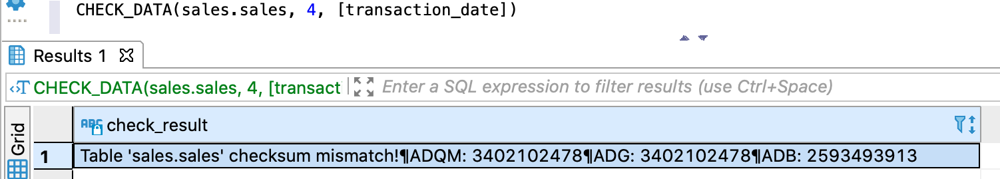

Запрос позволяет проверить идентичность данных логической таблицы, загруженных в различные СУБД хранилища в указанный период.
Проверка выполняется по всем операциям записи, начиная с дельты, указанной в запросе, и заканчивая последней закрытой дельтой. Граничные дельты включаются в проверку.
Алгоритм проверки зависит от параметров запроса:
Примечание: в проверке участвуют целевые СУБД хранилища — те СУБД, в которых размещены данные проверяемой логической таблицы. Если такая СУБД одна, проверка все равно выполняется и считается успешной (см. рисунок ниже).
В ответе возвращается:
Возвращаемая информация включает сообщение об успешной проверке или найденных расхождениях, а также список проверенных СУБД хранилища.
На рисунке ниже показан пример ответа в случае расхождения: хэш в ADB отличается от хэша в ADG и ADQM. Различия вызваны тем, что запись была удалена напрямую из ADB (за рамками системы), а записи в ADG и ADQM остались без изменений.

Ответ CHECK_DATA с найденными расхождениями
На рисунке ниже показан пример ответа в случае успешной проверки логической таблицы, данные которой размещены только в ADB.
Ответ CHECK_DATA с проверкой только в ADB
CHECK_DATA([db_name.]table_name, delta_number[, square-bracketed_column_list])
db_name — имя логической базы данных, в которой находится проверяемая логическая таблица. Указывается
опционально, если выбрана логическая БД, используемая по умолчанию;table_name — имя проверяемой логической таблицы;delta_number — номер дельты, с которой начинается проверка. Должен быть меньше или равен номеру
последней закрытой дельты. Номер последней закрытой дельты можно узнать с помощью запроса
GET_DELTA_OK;square_bracketed_column_list — список проверяемых столбцов таблицы. Элементы списка должны быть
указаны в квадратных скобках через запятую, например [identification_number, transaction_date].
Если столбцы не указаны, проверка выполняется по количеству записей, загруженных в рамках каждой
операции записи в каждую целевую СУБД хранилища.Нет строгой гарантии отсутствия ложноположительных результатов.
Проверка целостности данных логической таблицы sales в диапазоне [дельта 4, последняя закрытая дельта]:
CHECK_DATA(sales.sales, 4)
Проверка целостности данных столбцов identification_number и transaction_date логической таблицы
sales:
CHECK_DATA(sales.sales, 4, [identification_number, transaction_date])
CHECK_DATA(sales.sales, 4)